BioSpatial Intelligence
Data Encoding & ML · Term 3BioSpatial Intelligence is a machine-learning model that reads a floor's microclimate — sun, radiation and daylight per tile — and places the best-fit plants for it, deployed live in Grasshopper.
▶ Watch the mockup-
ML classificationevery floor tile → best-fit plants
-
Environment-awaresun · radiation · daylight per tile
-
7 plant clustersgrouped by environmental need
-
Live in Grasshoppercolored suitability map in Rhino
Team: Nihan Malkoç · Sushmitha Ravi · Faculty: Dr. Gabriella Rossi · Assistant: Georgios Bekakos
The Pipeline
The whole project is a data story — generate it, clean it, cluster it, label it, learn it, then deploy it.
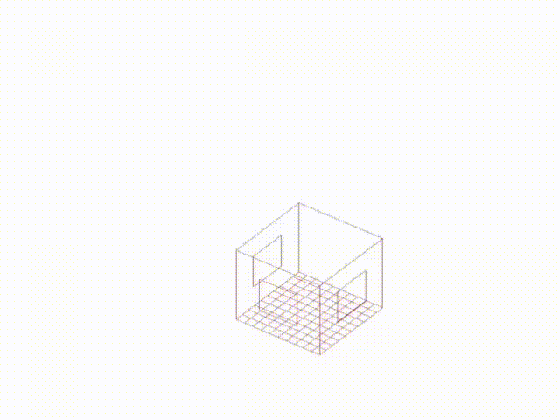
Parametric geometry + climate simulation.
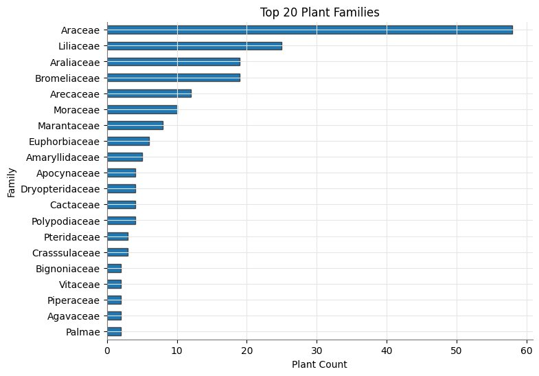
Validate & scale the plant data.
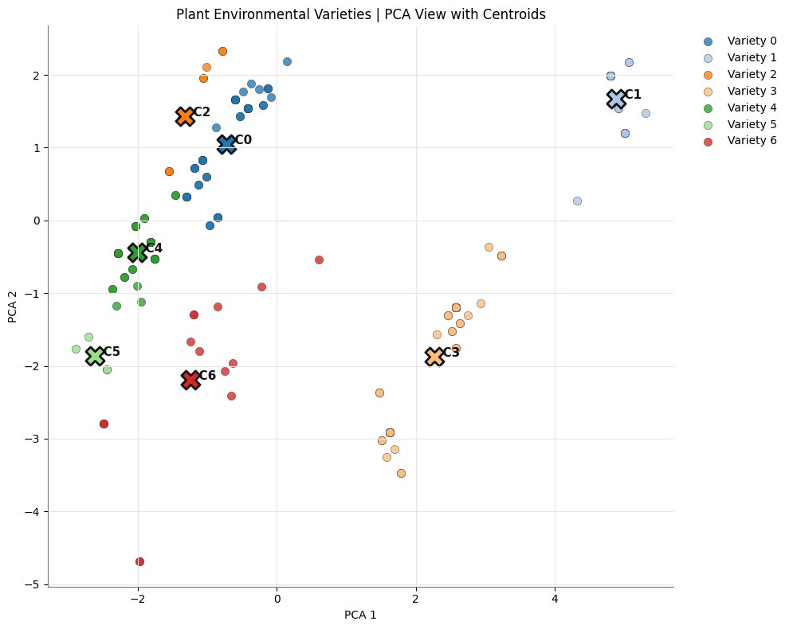
7 plant varieties (C0–C6).
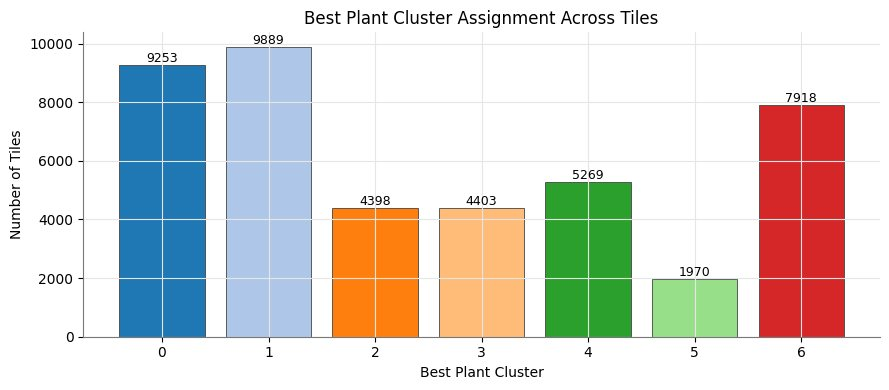
Score & label every tile.
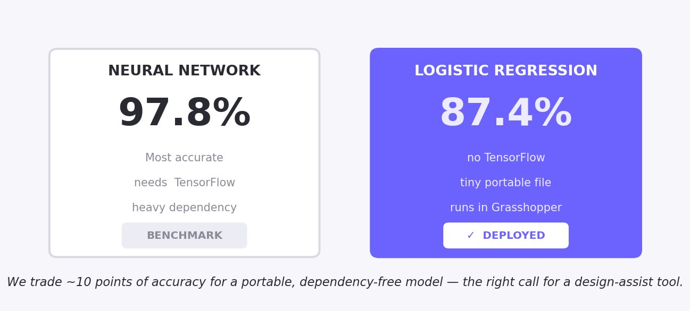
Train the model to predict it.
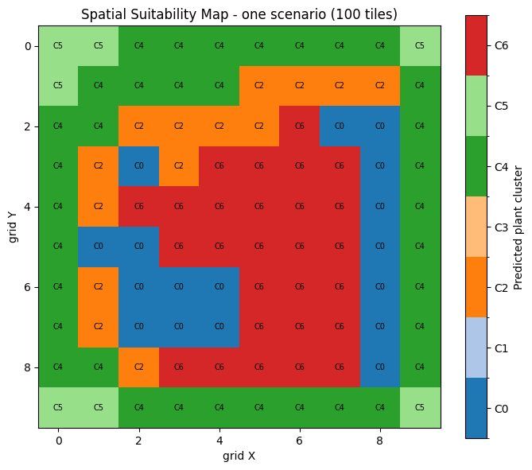
Live suitability map in Rhino.
01 · Building the Dataset
A Grasshopper + Python + Honeybee scenario generator builds every building configuration (window ratios 0–0.8, orientation 0–270°). Each floor is a 10×10 grid of 100 tiles, and every tile is simulated for its own sun, radiation and UDI. These are then engineered into a light index and a humidity proxy — a common language to compare tiles to plants.
02 · Plant Dataset & Cleaning
The plant dataset was imported and validated — counts, datatypes, missing values and required columns all checked. The top-20 botanical families were reviewed for over-representation and bias; 12 environmental features were median-filled for the gaps. Finally StandardScaler put every feature on equal footing, so a huge value like lux and a 0–1 drought-tolerance score count equally.
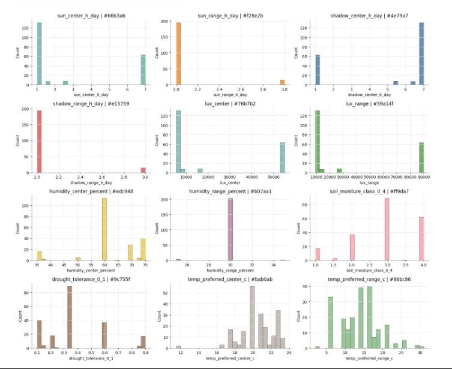
03 · Clustering into 7 Varieties
k was tested from 2 to 15 using elbow + silhouette scores; 7 clusters gave the best balance of detail and meaning. A 12-D → 2-D PCA shows the groups separating cleanly, and the clusters were validated against real botanical families.
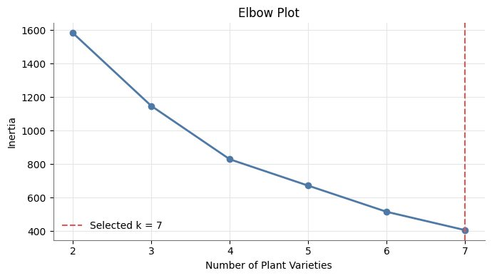
The 7 varieties (C0–C6), each with a distinct environmental profile:
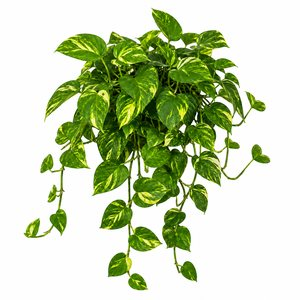
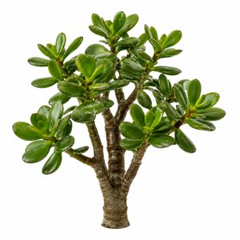
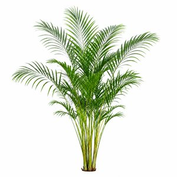
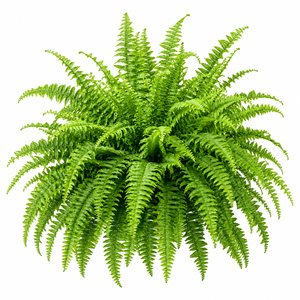
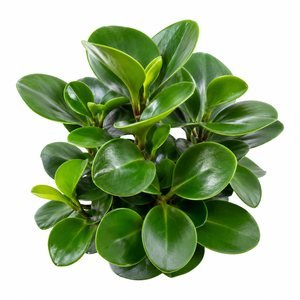
04 · Matching & Labeling
Tiles and clusters were expressed in the same units, so a suitability score (0.50 sun + 0.30 light + 0.20 humidity) could be computed directly. A key fix — per-cluster z-score normalization — stopped one high-scoring cluster from winning everywhere, so all 7 are assigned fairly. argmax gives each tile its label; softmax gives a confidence. The final dataset: 43,100 tiles × 32 columns.
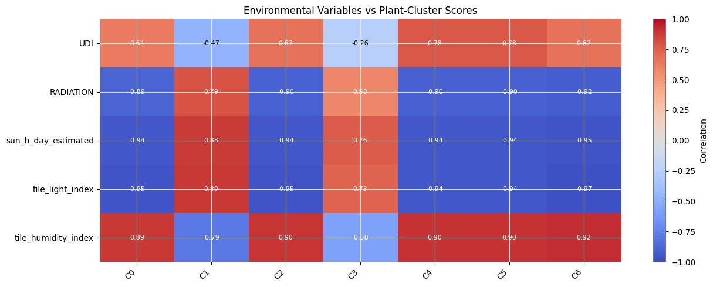
05 · Learning the Data
The model predicts the plant-cluster label from 8 environmental & geometric inputs. Both a logistic regression and a Keras neural network were trained and compared. The neural network is more accurate (~97.8%) but needs TensorFlow; logistic regression (~87.4%) is portable and dependency-free — so it is the model deployed live in Grasshopper, trading ~10 points of accuracy for one that runs anywhere.
Predictions compared per cluster (C0–C6) — logistic regression (deployed) vs the neural network (reference):
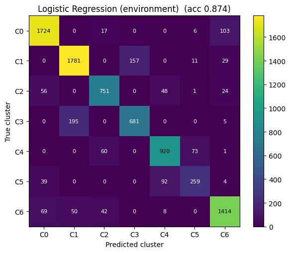
06 · Deployment
The trained logistic regression and its StandardScaler are exported as small .pkl files and loaded inside a Grasshopper Python component — logistic regression is the model we deploy because it is tiny and dependency-free (no TensorFlow), so it runs directly in Rhino / Grasshopper, painting a colored 10×10 suitability map per scenario.
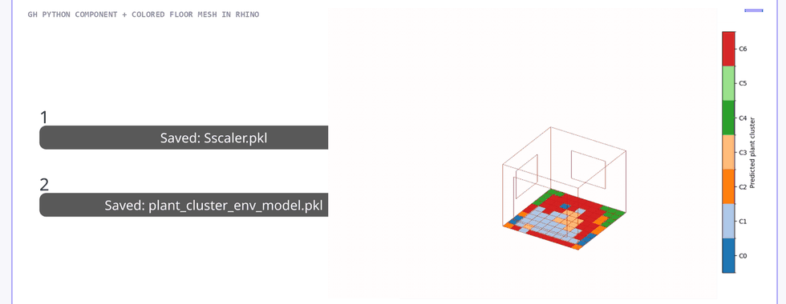
07 · Explainable AI · SHAP
SHAP confirms sun & radiation drive the predictions, followed by daylight, while window ratios are negligible — matching the environmental analysis, so the model stays explainable, not a black box.
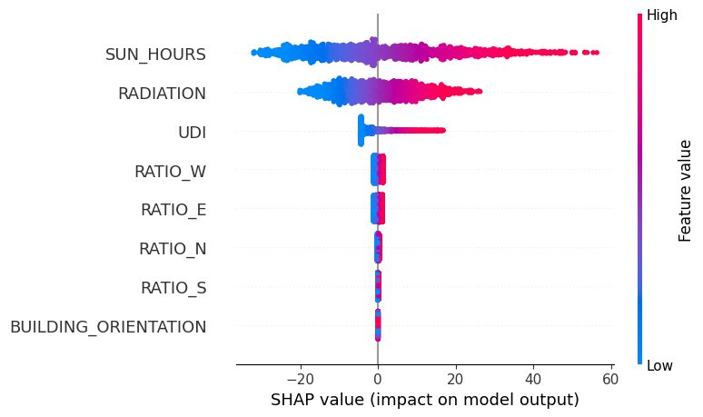
Next Phase · Interactive Interface
The final phase wraps the model in an interface: a designer sets building parameters and gets real-time planting suggestions — no code, no Grasshopper required.